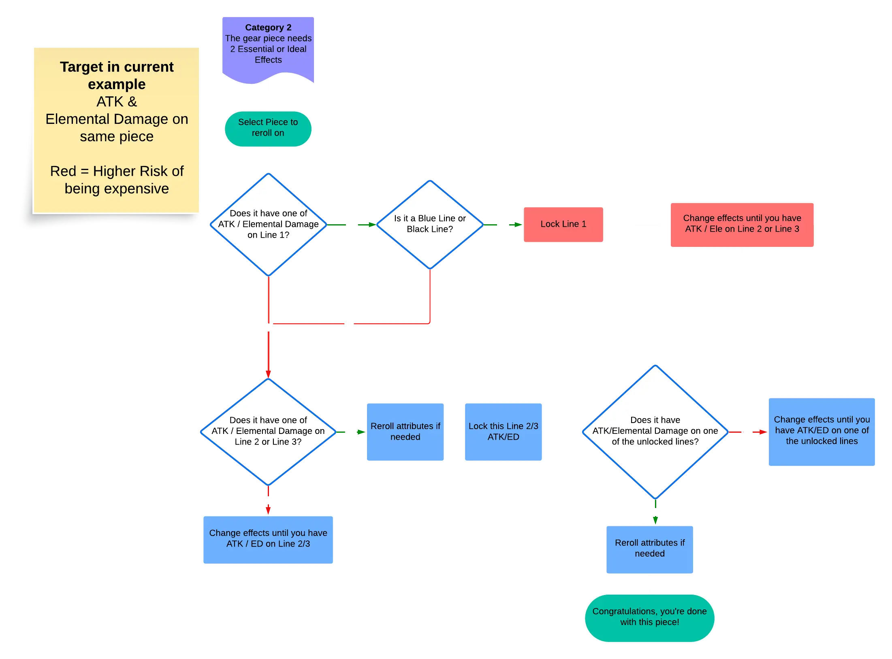
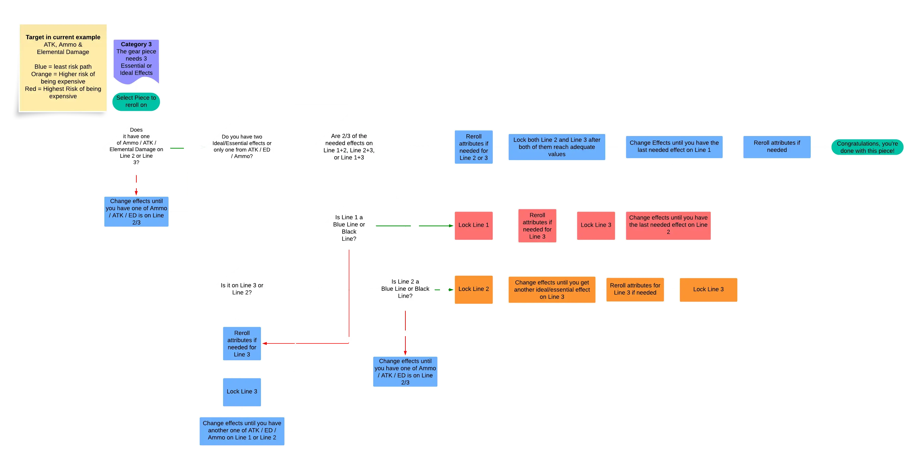

NIKKE Overload Reroll Advisor
Shows the single best next move for one gear piece: Change Effects, Reset Attributes or Lock. Set your target, enter the piece, follow the step.
click for more info
Every move here is the mathematically best one for finishing the piece over the long run, taken from a solved model of the game's reroll odds and prices. RNG still causes wide swings in luck, so the module forecast below is an estimated range, not a promise. The guide assumes you have enough modules to finish the piece. It is not for short-term fishing for a lucky roll with the modules you have, which can pay off now but costs more in the long run.
1 · Targets
(click to edit)
2 · Enter the gear piece
Enter the piece as it looks in the game. Tick Locked on any line you have locked.3 · Next move
4 · Unit totals
All rolled effects summed across the four pieces. A roll at or above its minimum counts as 1×, below it as 0.5× (Charge Damage, Crit and DEF always count 1×). Useful for stacked targets like 120% total Max Ammo.
Reference
About this tool
The NIKKE Overload Reroll Advisor tells you the cheapest next move when rerolling overload gear in GODDESS OF VICTORY: NIKKE: Change Effects, Reset Attributes, Lock or Unlock. You enter the three lines on each gear piece and the effects you want, for example Elemental Damage, ATK and Max Ammo, and it works out the move with an exact solver, along with the expected cost in Custom Modules. The Whole unit tab plans all four pieces (Head, Arm, Body, Leg) together. The By gear piece tab handles one piece at a time. It is a free fan-made tool.
Odds this tool assumes, as confirmed in game in October 2026. A line shows an effect 100%, 50% and 30% of the time for Lines 1, 2 and 3. Each effect is 10 to 12% of rolls. Each of Tiers 1 to 5 is 12% of rolls, each of Tiers 6 to 10 is 7%, and each of Tiers 11 to 15 is 1%. A reset never repeats the tier a line is on. If a game update changes any of these, the advice here is out of date until the tool is updated.
Substat value table (Blue = T12–14 · Black = T15)
Fresh overload rolls always come in at Tier 11. Line appearance chance on every roll: Line 1 = 100%, Line 2 = 50%, Line 3 = 30%.
Minimum acceptable value ("1× of an effect")
Below this, a roll counts as only 0.5×. Charge Damage / Crit Rate / Crit Damage / DEF: value doesn't matter.
Reroll & lock costs (Custom Modules)
| Action | Lines already locked | Module cost | Custom-lock cost |
|---|---|---|---|
| Reroll (Change / Reset) | 0 | 1 | — |
| Lock a line | 0 → 1 | 2 | 20 |
| Reroll | 1 | 2 | — |
| Lock a line | 1 → 2 | 3 | 30 |
| Reroll | 2 | 3 | — |
A temp lock holds a line for one reroll and costs no modules. Unlocking is free but never refunds modules.
The two reroll buttons and key terms
- Change Effects rerolls the effect type on every unlocked line (values change too). Use it to find the effects you want.
- Reset Attributes rerolls only the value of each unlocked line. Types stay, empty lines stay empty.
- Value rule since the Oct 2026 patch: a reset never repeats the tier a line is on. Rolling from Tier 1 to 5 makes every other tier about 14% more likely; rolling from Tier 11 or higher gains almost nothing. Black takes about 88 resets from Tier 1 to 5 (99 from Tier 11+); Blue or better about 22 (25). When you want Blue or Black, take only a roll at your target tier or higher. Tier 6 to 10 is only about 6% worse than Tier 1 to 5, so keep good middle rolls. If you stop early, take the best value offered; getting back onto a low tier later costs about 2 rolls. Change Effects is unaffected.
- Blue line = Tier 12 to 14. Black line = Tier 15 (about 1% per roll).
- Lock only when the lock pays for itself: a lock costs modules and makes every later roll dearer. With three targets, the solver works like this. A wanted effect on Line 3 is always held once it lands, because Line 3 rolls an effect only 30% of the time. On Line 2, a lone wanted effect is locked only when it is at its target and that target is hard to roll again; below target it is left to roll. On Line 1, a lone wanted effect is not locked unless it has reached a Black target: Line 1 rolls an effect every time, so it is filled last. With two targets, a wanted effect on Line 2 is held as well. The advice card applies this to your piece.
- Effects first, then values. Roll for effects with Change Effects. Hold a wanted effect on Line 3 when it lands. On Lines 1 and 2, a roll that loses more than it gains is simply declined with Keep, which costs nothing. Once every effect is on the piece, unlock any line that is below its target (free) and reset values with all of those lines in play: each reset rolls every unlocked line at once, so more lines means more chances per module. Lock a line when it reaches its target. The one exception is a line whose target is easier than the others: it can stay unlocked until a second line is at target, and the card says so when that applies. The advice card applies all of this exactly to your piece, including Blue and Black targets, where the balance shifts.
Source flowcharts & guide
Based on Prydwen's reroll flowcharts:
Cost model and lock timing checked against community simulations, including Pesu My's videos: 「1枠目ロックは本当に罠なのか？」(OL basics & reroll probabilities) ↗ · 「オバロ厳選をシミュレート！」(OL meta & his own overload simulator) ↗ · アプデ後のオバロ厳選 (the post-patch reroll rules) ↗
The post-patch value rules (Reset Attributes never repeats a line's current value) follow SkyJLV's videos: Overload reroll strategy ↗ · The reroll change explained ↗
Every move the advice card gives was then checked state by state against an exact optimal-policy solver. Where the solver finds a cheaper move than the charts below, the card follows the solver, so its advice can differ from them. The tooling is in the project's tools/solver ↗ folder.
Category 2 flowchart (2 effects)

flowchart-cat2.png). The same logic in text:Category 3 flowchart (3 effects)

flowchart-cat3.png). The same logic in text:Colour key (from the original charts): blue least-risk path · orange higher risk · red highest risk of being expensive.